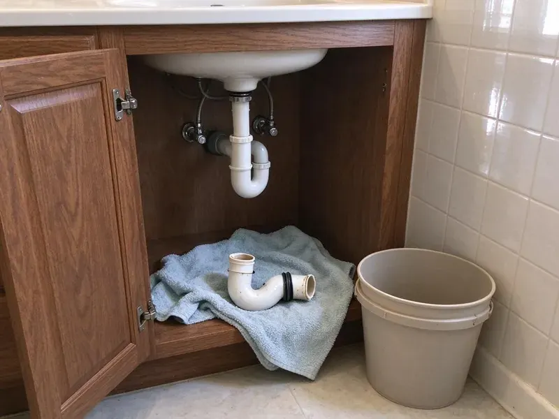

Tankless Water Heater Repair in Detroit, MI
For reliable tankless water heater repair in Detroit, MI, CHV Plumbing provides prompt and efficient service to restore your endless hot water.
- Expert Diagnostics
- Guaranteed Workmanship
- Upfront Pricing
- Long-Term Solutions
Need Tankless Water Heater Repair in Detroit, MI?
Call today with your brand and error code and we will come prepared.
Professional Tankless Water Heater Repair Services in Detroit, MI
When your tankless unit isn't delivering hot water, CHV Plumbing is here to help residents in Detroit, MI. Our skilled technicians quickly identify the root cause of the malfunction, so your tankless water heater is repaired correctly and your continuous hot water supply is restored.
Our expertise includes:
- Flushing and descaling tankless heaters
- Igniter, flame rod, flow sensor and thermistor testing and replacement
- Replacing heat exchangers and ignitors

Additional Plumbing Repair Services in Detroit, MI
We offer expert plumbing repair services across Detroit, MI to fix leaks, restore flow, and keep your system running smoothly.


Customers
Why Choose CHV Plumbing for Tankless Water Heater Repair in Detroit, MI?
We are dedicated to providing clear communication, honest assessments and effective repairs every time.
- Michigan Expertise, We understand how local water and weather conditions can affect tankless systems and fit our solutions accordingly.
- Scale Experts, We descale completely and recommend softening or scale filters suited to your water.
- Rapid Response, We prioritize your comfort with quick dispatch and efficient repair services to cut your downtime.
Citywide Coverage
From downtown to the surrounding suburbs of Detroit, CHV Plumbing ensures complete coverage for all your tankless water heater repair needs. We make it our priority to reach you quickly, limiting the inconvenience of a malfunctioning unit.
Experienced Team
Our team of plumbers has broad experience with tankless water heater repair, having worked on hundreds of units across Michigan.
Safety-First Approach
CHV Plumbing makes sure every tankless water heater repair is performed to the highest safety standards, preventing potential hazards like gas leaks or electrical shorts. Our compliance with all relevant building codes means a secure and properly functioning system.
Trusted Certified Detroit Plumbing Services Professionals
At CHV Plumbing, we take pride in providing certified plumbing services throughout Detroit, MI. Backed by leading industry credentials, our experienced plumbers combine technical skill with genuine customer care. Whether it is repair, installation, or maintenance, we follow strict safety and quality standards to deliver lasting results you can trust.
Call Us Now PHCC Plumbing Contractor Recognition
PHCC Plumbing Contractor Recognition Better Business Bureau (BBB) Accreditation
Better Business Bureau (BBB) Accreditation Angi Certified Pro
Angi Certified Pro ISO 9001 Quality Management Certification
ISO 9001 Quality Management CertificationTrusted Tankless Water Heater Repair Services in Detroit, MI
Pilot Light & Ignition Repair in Detroit, MI
For gas-fired tankless water heaters, a malfunctioning ignition system can completely stop hot water production. Our team in Detroit, MI diagnoses issues with igniters, flame sensors and gas valves. We ensure proper gas pressure and ventilation are maintained for safe and efficient operation. Timely repair of these components prevents hazardous gas problems and restores your unit's ability to heat water on demand.

Navien Tankless Water Heater Repair in Detroit
Navien units are known for their advanced condensing technology but can sometimes experience issues with their circulation pump or exhaust systems. CHV Plumbing provides dedicated Navien tankless water heater repair in Detroit, addressing common problems like ignition failures or condensate drain blockages. Our team is familiar with Navien's parts and troubleshooting protocols, delivering a precise and effective repair that maintains your unit's high efficiency.
No Hot Water Tankless Repair in Detroit
When your tankless unit fails to produce hot water, it is often due to issues with the ignition, gas supply or a clogged heat exchanger. Our technicians in Detroit will carefully diagnose the root cause, whether it is a faulty igniter, a pressure sensor malfunction or mineral buildup. We carry common replacement parts for fast fixes, restoring your continuous hot water supply efficiently. We also check for proper venting, which is crucial for the safe operation of your unit.
Tankless Repair vs Replacement Cost in Detroit, MI
Descaling service typically costs $175 to $350, and sensor or igniter repairs run $250 to $600. Heat exchanger replacement can cost $800 to $1,500 or more unless covered by warranty. A new tankless unit installed typically ranges from $3,000 to $5,500. We compare these costs against the age and condition of your unit.
Condensing Tankless Repair in Detroit, MI
Condensing tankless heaters, such as many Navien models, extract extra heat from exhaust and produce condensate. Clogged condensate traps, failed neutralizers and blocked drains can shut the unit down. We clean the trap, replace the neutralizer media and confirm proper drainage. PVC venting is also inspected for slope and sagging.
Emergency Tankless Water Heater Repair in Detroit, MI
A sudden loss of hot water can be an emergency, especially on a cold morning in Detroit, MI. CHV Plumbing offers emergency tankless water heater repair to address critical failures promptly. We are available to troubleshoot issues like major leaks, complete system shutdowns or persistent error codes that prevent any hot water production. Our rapid response team works quickly to restore your hot water, often on the same day.
Gas Tankless Water Heater Repair in Detroit
Gas tankless water heaters require correct gas pressure and proper ventilation for safe operation. Issues can range from gas valve failures to carbon monoxide sensor errors. Our certified technicians in Detroit perform thorough diagnostics on gas lines, igniters and exhaust systems, so your unit is both functional and safe.

Ignition Failure Repair in Detroit, MI
If your tankless unit will not fire, the cause may be a dirty flame rod, a bad igniter, low gas pressure or a blocked intake. We test each component and measure gas pressure at the inlet. Undersized gas lines are a common hidden cause when a tankless unit replaced a tank. We correct the issue so the unit lights every time.
Tankless Water Heater Repair Near Me in Detroit, MI
We are proud to be the trusted local experts for tankless water heater repair throughout Detroit. Our rapid response times and commitment to quality mean residents get their hot water systems back online quickly and efficiently, no matter where they are located in Michigan.
We are familiar with the plumbing infrastructure and water conditions throughout Detroit, making us well suited to provide effective and long-lasting tankless water heater repair solutions right in your neighborhood.
CHV Plumbing at a Glance
- Fully licensed plumbing team covering Detroit, MI
- Same-day appointments and 24/7 emergency response
- Upfront, flat-rate pricing before work begins
- 4.9-star rated by 670+ Michigan customers
Detroit Map
Detroit Information
- Population
- 633,218
- Area codes
- 313/810/734
- Service area
- Detroit and communities within 40 miles
- Nearby
- Dearborn, Warren, Royal Oak, Dearborn Heights
Tankless water heaters in Detroit, MI are susceptible to mineral buildup from hard water, making regular descaling and prompt repairs important to maintain efficiency and prevent premature system failure.
Expert Services
Trust our professionals for reliable CHV Plumbing solutions in Detroit, MI.
Our Specialized Plumbing Services in Detroit, MI
At CHV Plumbing, we provide a complete range of plumbing services across Detroit, MI. From leak detection to full system installations, our team ensures fast, precise, and affordable service for both residential and commercial properties. Explore our core services below:


How Our Tankless Water Heater Repair Process Works in Detroit, MI
Tankless repair starts with the right information, so we ask the right questions first.
Request a Quote
Call (810) 380-5918 and share the brand, model and any error code on the display. We schedule a visit and bring parts that match the probable failure.
Diagnose the Unit
We read error history, test sensors and gas pressure and inspect for scale. You get a clear price for repair before any work begins.
Repair and Tune
We repair or replace failed components, descale if needed and test across low and high flow. Settings are adjusted so the unit runs efficiently.
Frequently Asked Questions About Tankless Water Heater Repair in Detroit
The cost of tankless water heater repair in Detroit, MI can range from $150 to $800 or more, depending on the issue. Simple fixes like sensor replacements might be at the lower end, while major component replacements like a heat exchanger could be higher. We provide a detailed estimate once we find the problem.
Regular maintenance, particularly annual descaling, is important for tankless water heaters in homes with hard water. It prevents mineral buildup, maintains efficiency, extends the lifespan of the unit and helps avoid costly repairs by catching small issues early.
Minor tankless water heater repairs, such as replacing a sensor or igniter, typically do not require a permit in Detroit. Major component replacements, changes to the gas or water lines, or replacing the entire unit may require a plumbing permit to ensure code compliance.
We repair Navien, Rinnai, Noritz, Rheem, Takagi, A.O. Smith, Bosch, Stiebel Eltron and EcoSmart units, among others.
Many common tankless water heater repairs can be completed within 1 to 3 hours, especially if parts are readily available. More complex issues, like extensive descaling or ordering special parts, might take longer and may require a follow-up visit.
While some basic troubleshooting, like checking the power supply or gas valve, can be done, most tankless water heater repairs require specialized tools and knowledge. Attempting DIY repairs on gas or electrical components can be dangerous and void your warranty. It is always best to call a licensed plumber.
With regular descaling, tankless heaters often last 15 to 20 years. Without maintenance in hard water, problems can start within a couple of years.
Most repairs and descaling are done in one to three hours. If a part must be ordered, we typically return within a few business days.
What People Are Saying About Our Plumbing Experts?

Daniel K.
A pipe burst at 11 pm and they actually answered. The plumber showed up within the hour, shut everything down, and had us back to normal the next morning. Could not ask for more.
Emergency Plumbing · Warren, MI
Emily R.
I called CHV Plumbing for plumbing repair, and the technician was fast, polite, and thorough. They explained the problem clearly and fixed it the same day. I will definitely hire them again. Highly recommended!
Plumbing Repair · Dearborn Heights, MI
Mark T.
When our office needed drain cleaning, CHV Plumbing provided quick, reliable service. The plumber arrived on time and made sure every drain flowed perfectly before leaving. Very satisfied.
Drain Cleaning · Roseville, MI
Laura S.
I scheduled a water heater replacement, and the team made the process smooth and affordable. The new unit works perfectly, and they cleaned up after completing the job.
Water Heater Replacement · Roseville, MISofia M.
Two new toilets installed in one visit, no mess left behind, and the tech even adjusted a faucet he noticed was dripping. Fair pricing and really friendly.
Toilet Installation · Roseville, MI
Robert G.
The trenchless sewer replacement saved our front yard. They walked us through the camera inspection footage first so we knew exactly what we were paying for.
Sewer Line Replacement · Roseville, MI